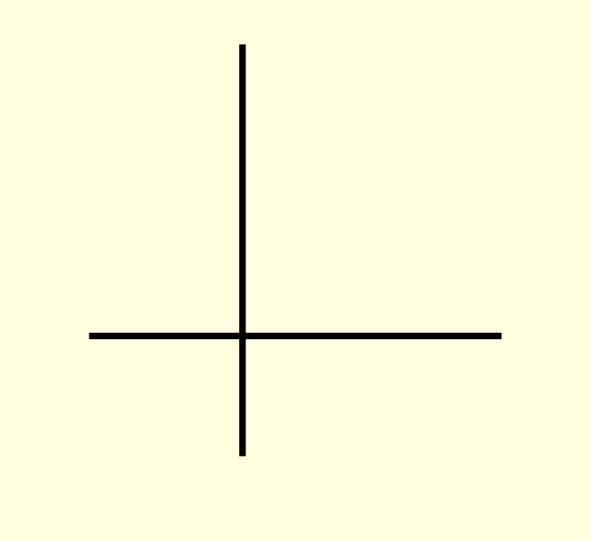

Basis, Dimension and Co-ordinates
NOTE: Consider the vector space R2 over R
I. Example
- B is basis, dim R2 = 2
- Coordinates of (a, b) are a and b w.r.t. the basis B
- In particular, coordinates of (1, 2) are 1 and 2 w.r.t. the basis B.

- B is basis, dim R2 = 2
- Coordinates of (a, b) are 2a-b and b-a w.r.t. the basis B
- In particular, coordinates of (1, 2) are 0 and 1 w.r.t. the basis B.
II. Construction of basis of R2
- Choose a ≠ 0
[ For example let a = (2, 3) ]
- Choose b ∉ span({a})
[ For example let b = (1, 4) ]
Example
- B = {a, b} is a basis.
- For example {(2, 3), (1, 4)} is a basis.
- For example {(2, 3), (4, 6)} is not a basis.
III. Checking whether a given nonempty subset B of R2 is a basis or not?
- If 0 ∈ B, B is not a basis.
- Otherwise go to Step 2.
- If no. of elements in B is not 2, then B is not a basis.
- Otherwise go to Step 3.
If B = {a, b}⊂R2, then it may or may not be a basis.
Infact
- b ∈ Span({a}) ⇒ B is not basis
- b ∉ Span({a}) ⇒ B is basis
NOTE: Apply the method on various subsets of R2
NOTE: Try it yourself for the vector space Rn over R for some other values of n
« Previous